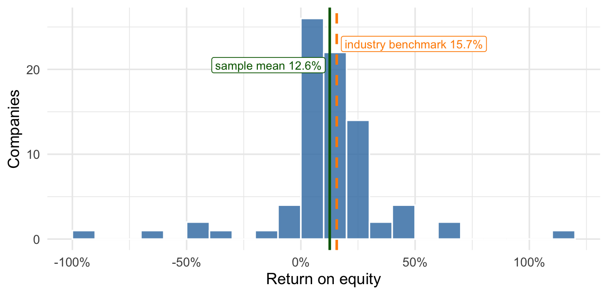
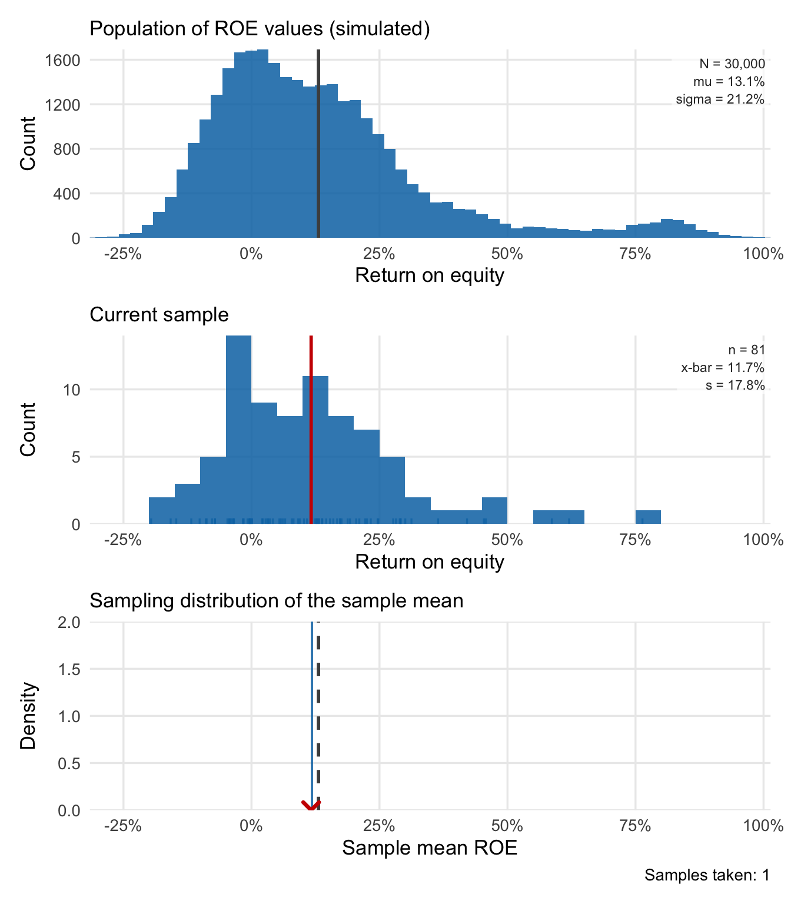
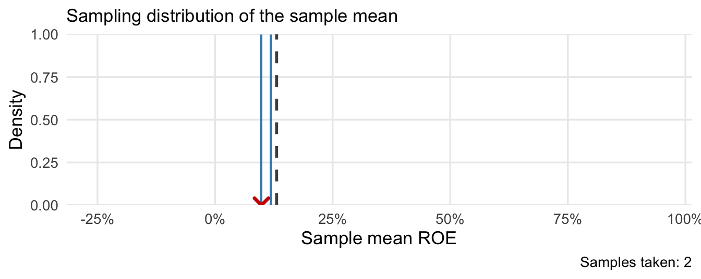

16 Sampling Distributions and Confidence Intervals
16.1 The SAP dispute
In 2005 SAP, the world’s largest maker of enterprise software, ran advertisements claiming that companies running SAP are 32% more profitable than companies that don’t. The figure came from a study SAP commissioned and never released for public scrutiny (Carr 2005, 2006). In March 2006 the analyst firm Nucleus Research published a rebuttal (Nucleus Research 2006). Nucleus collected data on the 81 publicly traded companies listed as customers on SAP’s website. For each company, it looked up return on equity (ROE), annual profit as a percentage of shareholder equity, along with the average ROE of the company’s industry. ROE measures how profitably a company uses its shareholders’ capital.
The 81 SAP customers averaged an ROE of 12.6% against industry benchmarks averaging 15.7%, and Nucleus titled the report “SAP customers are 20 percent less profitable than their peers” (12.6 is about 20% below 15.7).
SAP dismissed the report as “junk science.” Its argument was about sample size: 81 companies out of SAP’s roughly 30,000 customers is about a quarter of one percent, far too few — SAP claimed — to say anything about the customer base as a whole. Who is right? Both sides are arguing about the same unknown quantity, the average ROE among all 30,000 customers. The next few chapters build the tools to say what 81 companies can and cannot tell us about it.
The sap_roe data contain the 81 companies from the Nucleus report, one row per company: its name (company), its industry (industry), its ROE in percent (roe), and the average ROE of its industry (industry_roe). Figure 16.1 shows the 81 ROE values along with the two averages in dispute.
Company ROEs run from -91.8% to 116.4%, with a standard deviation of 25.7 percentage points. Because the sample mean is sensitive to extreme values, including or excluding a few firms could change it appreciably. How much would the mean vary across random samples of 81 companies?
To reason about an error we can’t observe, we need a model for how the sample arose. For now, consider the 81 companies as a simple random sample of SAP customers: a lottery draw in which every group of 81 customers is equally likely to be selected. Since 81 is a small fraction of the population, we can approximate this sampling process with iid random variables \(X_1, \dots, X_{81}\), drawn from a discrete distribution placing probability \(1/N\) on each of the \(N\) companies in the population. This is the same thought exercise we went through in the introductory probability chapter. The true population mean and standard deviation of that distribution are \(\mu\) and \(\sigma\), respectively — the mean and SD we would get if we could see all 30,000 firms’ ROE.
Technical detail 16.1: Approximating a random sample with iid draws
If the connection between sampling firms and drawing random variables still feels abstract, the table below may help. Table 16.1 shows the probability distribution of a single firm drawn completely at random from the population.
| Company | ROE (\(x\)) | Probability of selecting company |
|---|---|---|
| 1 | 44.3% | 1/30,000 |
| 2 | 6.3% | 1/30,000 |
| 3 | 5.1% | 1/30,000 |
| 4 | 0.9% | 1/30,000 |
| 5 | 4.5% | 1/30,000 |
| \(\vdots\) | \(\vdots\) | \(\vdots\) |
| 30,000 | -1.0% | 1/30,000 |
Let \(X\) be the ROE of a company drawn at random, with every company equally likely. If company \(i\) has ROE \(x_i\), the mean of this distribution is
\[ \mu = \frac{1}{30{,}000}\sum_{i=1}^{30{,}000}x_i = \frac{x_1 + x_2 + \cdots + x_{30{,}000}}{30{,}000}. \]
This is the average ROE over the whole population. The population variance \(\sigma^2\) and standard deviation \(\sigma\) are computed similarly, using the discrete variance and standard deviation formulas. Just as before, we can interpret \(\mu\) as the expected value for the ROE of a single firm sampled from this population and \(\sigma\) as a measure of how far that firm’s ROE is likely to be from \(\mu\).
Our thought experiment treats the observed sample of 81 firms as iid observations, like a series of coin tosses or dice rolls. However, when working with surveys of a finite population, a random sample typically selects firms without replacement — no firm could appear more than once — producing dependence between the observations (if firm A appears, firm B is less likely to appear because one “slot” of the 81 is missing). However: a) the dependence is very weak when the sample size is much smaller than the population, and b) ignoring this particular kind of dependence actually produces a conservative estimate of uncertainty.
Before we continue, we need to collect a few definitions and notation conventions.
Definition 16.1: Parameter, estimator, and estimate
The parameter is a fixed numerical property of the population or probability distribution that we want to estimate — here the true average ROE \(\mu\) among all of SAP’s customers.
An estimator for a parameter is the recipe (a mathematical formula) applied to a random sample — for example, the sample mean \(\bar{X}\) is the arithmetic average we defined in the definition of the sample mean, computed on a random sample. It’s a random variable because the sample over which we take the average is random.
The estimate is the number the recipe produced from our actual sample: in the SAP example, \(\bar{x} = 12.6\%\).
The estimation error \(\bar{X} - \mu\) is random; it depends on the sample we observe. Since we can describe the probability distribution of \(\bar X\), we can describe the probability distribution of our estimation error.
The realized estimation error \(\bar{x} - \mu\) is a single fixed number we cannot calculate from the sample alone, because it depends on the unknown \(\mu\).
The essential question in this dispute is this: Does the estimate of 12.6% ROE among the 81 firms provide strong evidence that SAP firms have below-average (15.7%) ROE?
16.2 Sampling distributions and confidence intervals
Suppose thousands of analysts each drew a random sample of 81 SAP customers and computed its mean ROE. Their estimates would vary around the population mean \(\mu\). If that variation were small, a single sample mean would usually be close to \(\mu\); a wide spread would allow larger estimation errors. We describe this variation with the sampling distribution.
Definition 16.2: Sampling distribution
The sampling distribution of a statistic (like the sample mean) is the probability distribution of that statistic across random samples of a given size \(n\). For the sample mean, it is the distribution of \(\bar{X}\) — the values our recipe could have produced, had the sample come out differently.
In real life we get one sample, so we never see the sampling distribution directly.
Under the iid model, we know two things about this distribution exactly. The rules for sums and averages of iid random variables give \(E[\bar X] = \mu\) and \(SD(\bar X) = \sigma/\sqrt{n}\). The Central Limit Theorem (CLT) adds the shape: the sampling distribution of the sample mean is approximately normal when the iid model has finite variance and the sample size is large enough:
\[ \bar{X} \;\approx\; N\!\left(\mu,\; \sigma^2/n\right). \]
In words: across random samples, the sample mean is right on average, and its typical distance from the truth shrinks as the sample grows.
Using our rules for shifting and scaling random variables, which apply to normal distributions too, we can get the distribution of the estimation error \(\bar{X} - \mu\) over many random samples by shifting the mean to zero:
\[ \bar{X} - \mu \;\approx\; N\!\left(0,\; \sigma^2/n\right). \]
Across random samples, the errors average to zero. Their standard deviation, \(\sigma/\sqrt{n}\), describes how far individual sample means typically fall from \(\mu\); we call it the standard error of the sample mean.
Definition 16.3: Standard error
The standard error of a statistic is the standard deviation of its sampling distribution. For a statistic that is right on average, like the sample mean, it is the typical size of the estimation error:
\[ SE(\bar{X}) = \frac{\sigma}{\sqrt{n}} \approx \frac{s}{\sqrt{n}}, \]
and the number we report is an estimate, computed by plugging in the sample standard deviation \(s\) for the unknown \(\sigma\).
For the SAP sample the ingredients are \(s = 25.7\) and \(n = 81\), so
\[ SE(\bar{X}) \approx \frac{s}{\sqrt{81}} \approx 2.85 \text{ percentage points}. \]
In words: when we estimate the average ROE of all SAP customers from 81 of them, our estimate typically misses by about 2.9 percentage points. The gap Nucleus built its headline on is 3.1 points — almost exactly the size of a typical error induced by using a random sample of size 81 instead of the entire population.
16.2.1 Simulating the sampling distribution
The app draws repeated samples from a simulated population of 30,000 company ROE values. We know every value in this population, so we can compare each sample mean with its true mean. This is an illustration of random sampling; these simulated firms are not the actual population of SAP customers.
TipTry it yourself
Open the sampling distribution explorer in a new browser window beside this page. Work through the steps below as you read.
The app shows three stacked panels. The top panel is the population: a histogram of all 30,000 simulated ROE values, with the population size \(N\), the population mean \(\mu\), and the population standard deviation \(\sigma\) printed on the plot.
Set the sample size to 81, matching the Nucleus study, and hit the “Take 1 sample” button. The middle panel shows the 81 values the app just drew, with \(n\), \(\bar{x}\), and \(s\) printed beside them. A red line marks the sample mean. The bottom panel repeats that mean as a red X, beside a dashed line at the population mean \(\mu\).

The red X’s position relative to the dashed line shows the sample’s estimation error: negative to the left of \(\mu\), positive to the right. Your app will draw a different random sample, so its mean will generally differ from the one printed here.
Hit “Take 1 sample” again. The middle panel now shows a fresh set of 81 companies with a new mean, the red X jumps to the new value, and the bottom panel keeps the previous mean in its history.

By default, the “Take many samples” button adds batches of 50 sample means to the bottom panel. Keep the sample size at 81 and compare the histograms after 50 and 5,000 samples. More repetitions give a clearer picture of the sampling distribution for \(n=81\); they do not reduce its standard error. To reduce the standard error, we would need more firms in each sample.


The sample means cluster around the population mean in an approximately bell-shaped distribution, even though individual ROEs are skewed.
This isn’t a coincidence; this is the Central Limit Theorem at work. Tick the “Show normal approximation” box and the app overlays the curve \(N(\mu, \sigma^2/n)\) in purple — computed from the simulated population’s mean and standard deviation and the sample size.
The app’s standard error is 2.35 percentage points. It uses the known standard deviation of the simulated population, \(\sigma = 21.2\) points. Our earlier estimate of 2.85 points used \(s = 25.7\) points from the actual SAP sample. Both calculations divide by \(\sqrt{81}\), but their inputs describe different data.

Nucleus had one sample. The sampling model lets us estimate how much its mean would vary across repeated samples, even though we cannot observe those other samples.
16.2.2 Accounting for sampling error when presenting results
Let’s return to SAP’s objection: They said, essentially, that a sample of 81 firms was far too small to learn anything about 30,000 firms. We know that is, at best, incomplete — if the population variability of ROE was very low, we could learn an awful lot from the average of 81 observations. A more charitable read of the objection would be: Given the variability in ROE across the population of firms, if the true average ROE of SAP firms were 15.7% (the industry average), then an observed difference of \(12.6 - 15.7 = -3.1\) percentage points between the sample estimate and true value is perfectly consistent with chance variability due to random sampling. Concluding that SAP firms have below-average profitability would be a mistake. (SAP is actually making a stronger statement, that their firms have average ROE 32% higher than average, which would be about 20.7%.)
We can avoid making a guess about the true population mean entirely if we ask a different, related question: What values for the true population average are consistent with the data we observed? The sample average ROE is our best guess for the population average ROE, but we know that it is off by some amount due to the random sampling process. What we would like to do is report an interval: Our best guess plus or minus a margin of error that describes the range of true values we can’t rule out with a high degree of certainty given the natural variability in ROE — measured by \(\sigma\), estimated by \(s\) — and the sample size \(n\).
We already established that \(\bar X - \mu\), our error, has an approximately normal distribution with mean zero and standard deviation \(SE(\bar X) = \sigma/\sqrt{n}\). That means the interval \[ \bar X \pm 2\underbrace{SE(\bar X)}_{ = \sigma/\sqrt{n}} \] will contain \(\mu\) in about 95% of all possible random samples of size \(n\). Why? Since \(\bar X-\mu \approx N(0, SE(\bar X)^2)\), \[ \Pr[-2SE(\bar X) \leq \bar X - \mu \leq 2 SE(\bar X)] \approx 0.95. \] A little algebra turns this into \[ \Pr[\bar X - 2SE(\bar X) \leq \mu \leq \bar X + 2 SE(\bar X)] \approx 0.95. \]
We can plug in the observed estimate \(\bar x\) and \(s/\sqrt{n}\), the estimate of \(SE(\bar X)\) computed in the definition of standard error, to get a computable interval:
\[ \bar x \pm 2\frac{s}{\sqrt{n}} \]
We call an interval constructed this way a confidence interval, and it represents all possible values for the true population mean that are consistent with the data we have, at a given level of confidence (95% here).
Definition 16.4: Confidence interval
A confidence interval for a parameter is a range of plausible values for that parameter (at a given confidence level, usually 95%). These are values for the true parameter that are consistent with the data we observed; the difference between a plausible value and our best guess (\(\bar x\)) can be reasonably explained by chance variation due to sampling.
For an estimator whose sampling distribution is approximately normal and centered at the parameter, an approximate 95% confidence interval is
\[ \text{estimate} \pm 2 \times \text{(standard error)}. \]
The 95% describes repeated use of the procedure: across many random samples of the same size, about 95% of the intervals contain the fixed population parameter. For the sample mean, we estimate the standard error with \(s/\sqrt n\), so the interval’s width also varies from sample to sample. Its coverage is approximate.
For the SAP sample,
\[ 12.6 \pm 2(2.85) \approx [6.9\%,\ 18.3\%]. \]
TipInterpretation: what the interval says about the dispute
The plausible values for the true average ROE among all SAP customers run from about 6.9% to about 18.3%. Parity with peers is one of them: the 15.7% industry benchmark sits inside the interval, so the 3.1-point gap Nucleus led with is consistent with ordinary sampling variation. So is an average ROE near 7%, which would be considerably worse than Nucleus claimed. Using the industry benchmark for this comparison, SAP’s advertised 32% advantage implies about 20.7%, which lies outside the interval and is not a plausible value at this confidence level.
We can get a feel for what a confidence interval represents and how it behaves in the app. Tick “Show approximate 95% confidence interval” and every sample now draws its interval along the bottom of the sampling distribution, colored green when it covers the dashed line at \(\mu\) and red when it misses.

As you keep sampling, the footer keeps a running tally of how often the interval covered \(\mu\). The tally bounces around early on — after 50 samples ours read 90.0% — and settles near 95% as the samples pile up. Figure 16.8 draws the first 100 intervals separately instead of one at a time, so you can see each miss the tracker counted.

WarningCommon mistake: The 95% describes the procedure, not this interval
\(\mu\) is a fixed number, and \([6.9\%, 18.3\%]\) either contains it or it doesn’t — there is no randomness left to attach a probability to.
The 95% statement belongs to the method: intervals built this way contain \(\mu\) in about 95% of random samples. Over many independent data analyses for this class where the sampling assumptions hold, about 95% of the intervals will contain the true value and about 5% will miss. We can’t know which intervals miss, but we know it doesn’t happen too often.
16.3 Practice
Exercise 16.1: What is being estimated?
A retailer wants the mean delivery time \(\mu\) for all orders in its current service area. In an invented study, it takes a random sample of 100 orders and computes an average delivery time of 42 minutes.
Identify the parameter, the estimator, and the estimate. If the retailer drew a new random sample, which of these would change and which would stay fixed?
Solution
The parameter is the population mean delivery time \(\mu\). The estimator is the sample mean \(\bar{X}\), the rule for averaging the sampled times. The estimate is \(\bar{x}=42\) minutes. A new sample would generally give a different estimate; the population parameter and the averaging rule would stay fixed.
Exercise 16.2: Individual times and averages
Suppose delivery times are iid draws from a population with standard deviation \(\sigma=12\) minutes. Compare random samples of 100 and 400 orders.
Compute the standard error of the sample mean for each size. Explain which spread changes and which stays at 12 minutes when the sample size increases.
Solution
The standard errors are \(12/\sqrt{100}=1.2\) minutes and \(12/\sqrt{400}=0.6\) minutes. Quadrupling the sample size halves the spread of sample means across repeated samples. Individual delivery times still have population SD 12 minutes; collecting more orders makes their average more precise without making individual deliveries less variable.
Exercise 16.3: A confidence interval for delivery time
An iid sample of 100 delivery times has sample mean 42 minutes and sample standard deviation 12 minutes. Assume the sampling distribution of the sample mean is approximately normal.
- Compute the estimated standard error and an approximate 95% confidence interval for the population mean using the two-SE rule.
- Write one sentence interpreting the interval for the company’s operations manager.
- A population mean delivery time above 45 minutes would trigger a costly process review. Does this audit support triggering the review?
Solution
- The estimated SE is \(12/\sqrt{100}=1.2\) minutes. The interval is \(42\pm2(1.2)=[39.6,\ 44.4]\) minutes.
- Under the sampling assumptions, mean delivery times from about 39.6 to 44.4 minutes are consistent with this audit. The interval concerns the mean. Individual deliveries vary much more, with a sample standard deviation of 12 minutes.
- No. The upper endpoint, 44.4 minutes, is below 45 minutes, so the audit does not support a review on the grounds that the population mean exceeds 45 minutes.
Exercise 16.4: Read an interval backwards
An analyst reports a two-SE confidence interval of $46 to $54 for mean order value, based on a random sample of 100 orders. The interval is centered at the sample mean and uses the standard error \(s/\sqrt n\).
- Recover the sample mean, the margin of error, the estimated standard error, and the sample standard deviation.
- A manager calls the $8 width of the interval “the standard error.” What is wrong with that description?
Solution
- The sample mean is the midpoint, \((46+54)/2=50\) dollars. The margin of error is half the width, $4. The margin is two standard errors, so the estimated standard error is $2. Since \(s/\sqrt{100}=2\), the sample standard deviation is $20.
- The width spans two margins, or four standard errors. The standard error is $2, a quarter of the width; it measures how much the sample mean varies across random samples of 100 orders.
Exercise 16.5: An interval from three numbers
A random sample of 64 support tickets has mean resolution time 18 hours and sample standard deviation 8 hours. Treat the times as iid and assume the normal approximation for the sample mean is adequate.
- Estimate the standard error, then compute the margin of error and an approximate 95% confidence interval for the population mean resolution time.
- Write one sentence interpreting the interval in context.
- Is a population mean of 21 hours plausible at this confidence level? Does the interval say where 95% of individual tickets’ resolution times fall?
Solution
- The estimated standard error is \(8/\sqrt{64}=1\) hour, so the margin of error is 2 hours and the interval is \(18\pm2=[16,\ 20]\) hours.
- Under the sampling assumptions, population mean resolution times from 16 to 20 hours are consistent with this sample.
- A mean of 21 hours is not plausible, because it lies above the upper endpoint. The interval does not describe individual tickets. It concerns the mean, and individual resolution times vary much more, with a sample standard deviation of 8 hours.
Exercise 16.6: Choose and repair an interpretation
From a random sample of support tickets, an analyst computes an approximate 95% confidence interval of \([16,\ 20]\) hours for the population mean resolution time. Decide whether each statement is correct. Rewrite each incorrect statement so that it is correct.
- “About 95% of tickets take between 16 and 20 hours to resolve.”
- “Population mean resolution times from about 16 to 20 hours are plausible under the sampling model.”
- “About 95% of intervals constructed this way from repeated random samples would contain the population mean.”
- “Now that we have calculated it, there is a 0.95 probability that the population mean lies between 16 and 20 hours.”
Solution
- Incorrect. It confuses uncertainty about the mean with variation among tickets. A correct version is statement 2.
- Correct.
- Correct. This describes the procedure across repeated samples.
- Incorrect. The population mean is a fixed number, and this interval either contains it or does not. The 0.95 describes the procedure, as in statement 3, not this particular interval. A correct version: “Intervals built this way contain the population mean in about 95% of random samples, and 16 to 20 hours is the set of plausible means from this one.”
Exercise 16.7: Count coverage
In a teaching simulation, the population mean is known to be 50. Five independent random samples give the approximate 95% confidence intervals \([46,\ 52]\), \([49,\ 55]\), \([51,\ 57]\), \([44,\ 50]\), and \([48,\ 54]\).
- Which intervals contain the population mean?
- Does the observed coverage show that the method’s confidence level is wrong?
- Across 1,000 repetitions, about how many intervals would you expect to contain the mean? Must the count equal that number exactly?
- What stays fixed as the sampling repeats, and what changes?
Solution
- Four intervals contain 50: the first, second, fourth, and fifth. The fourth has 50 as its upper endpoint. The third, \([51,\ 57]\), misses.
- No. A 95% procedure misses about one time in 20, and among five intervals at least one miss happens about 23% of the time, \(1-0.95^5\approx0.23\). Five intervals are far too few to judge the method’s long-run coverage.
- About 950. The count varies from one set of 1,000 repetitions to the next.
- The population and its mean stay fixed. The sample, the sample mean, and the interval change from one repetition to the next. The simulation can check coverage only because we know the population mean; with one real sample, we cannot tell whether our interval contains it.
Exercise 16.8: Plan for a narrower interval
A research firm plans a survey of starting salaries among recent MBA graduates nationwide. It will sample at random from a list far larger than any sample it could afford, and it uses $15,000 as a planning value for the population standard deviation. To plan, substitute the planning value for \(\sigma\) in the two-SE margin \(2\sigma/\sqrt n\) and solve for the sample size.
- What margin of error does a sample of 100 graduates target?
- What sample size targets a margin of $2,000?
- Does a larger sample make individual salaries less variable? Does it guarantee that the next sample mean will be closer to the population mean than the first one was?
Solution
- The margin is \(2(15{,}000)/\sqrt{100}=3{,}000\) dollars.
- Solving \(2(15{,}000)/\sqrt n=2{,}000\) gives \(\sqrt n=15\), so \(n=225\). Cutting the margin by a third takes 2.25 times as many graduates, because the margin shrinks with \(\sqrt n\).
- No to both. Individual salaries keep a standard deviation of about $15,000 whatever the sample size. A larger sample makes sample means less variable across repeated samples, but any one sample mean can still land farther from the population mean than an earlier one did. The planned sample size is also only as good as the $15,000 planning value.
Exercise 16.9: Write the audit conclusion
A drug manufacturer randomly samples 144 tablets from one week’s production on a single line. Mean active-ingredient content is 249 mg and the sample standard deviation is 12 mg. Use an iid approximation and assume the normal approximation for the sample mean is adequate. The label requires a population mean of at least 250 mg; a mean below 246 mg would trigger a line shutdown.
- Define the population and parameter, then compute the estimated standard error and an approximate 95% confidence interval.
- Assess the 250 mg label requirement and the 246 mg shutdown threshold separately.
- Write a two-sentence report giving the estimate, the interval, and what remains uncertain.
- The quality team considers repeating the study using only tablets from the first hour of Monday’s run. Explain what would need to be checked before reading the new interval as an estimate for the whole week’s production.
Solution
- The population is every tablet the line produced that week, and the parameter is their mean active-ingredient content. The estimated standard error is \(12/\sqrt{144}=1\) mg, and the interval is \(249\pm2(1)=[247,\ 251]\) mg.
- The sample does not establish that the line meets the label, because the interval includes means on both sides of 250 mg. Means below the 246 mg shutdown threshold lie outside the interval, so the data do not support a shutdown under the sampling assumptions.
- “We estimate mean content at 249 mg, with an approximate 95% interval from 247 to 251 mg. The sample leaves the 250 mg label requirement unresolved, while mean content below the 246 mg shutdown threshold is inconsistent with these data.”
- Tablets from the first hour of one run may reflect start-up conditions, such as calibration or a fresh lot of raw material, that differ from the rest of the week. The team would need evidence that those tablets resemble the week’s production. A narrow interval from an unrepresentative hour estimates that hour’s mean precisely, not the week’s.
16.4 Additional practice
Exercise 16.10: Reading a confidence interval
A grocery delivery app takes a random sample of 400 orders from last month. The order value is the amount spent on an order. The sample mean order value is $64.20 and the sample standard deviation is $38.00, so the estimated standard error is \(38/\sqrt{400}=1.90\) and the two-SE interval for the mean order value \(\mu\) is \([60.4,\ 68.0]\) dollars.
First, write one sentence interpreting the interval for the app’s managers. Then decide whether each statement below is a correct reading of the interval. Where it is not, say what is wrong and give a correct version.
- “About 95% of orders have order values between $60.40 and $68.00.”
- “There is a 95% probability that the mean order value across all of last month’s orders is between $60.40 and $68.00.”
- “A mean order value of $70 is not a plausible value at this level of confidence.”
- “Sampling 1,600 orders instead of 400 would roughly halve the margin of error.”
Finally, a free-delivery promotion breaks even if the mean order value is at least $62. What does the interval say about whether the promotion breaks even?
Solution
One correct interpretation: under the random-sampling model, mean order values across all of last month’s orders from about $60.40 to $68.00 are consistent with this sample.
- Incorrect. The interval describes plausible values for the mean order value. The sample standard deviation of individual order values is $38, but the interval concerns uncertainty in the mean, not the spread of orders.
- Incorrect. This is the common mistake described in Section 16.2.2. The mean is a fixed number, and this particular interval either contains it or does not. The 95% describes the procedure: across repeated random samples of 400 orders, about 95% of intervals built this way contain the mean.
- Correct. $70 lies above the interval’s upper endpoint. If the mean were $70, the observed mean of $64.20 would be about three standard errors below it.
- Correct, approximately. The standard error is \(s/\sqrt n\), so quadrupling \(n\) halves it, provided the new sample’s standard deviation is close to $38.
The break-even value of $62 lies inside the interval. The best estimate is above it, but a mean below $62 is consistent with the data, so the sample cannot rule out a promotion that loses money. A decision needs either a larger sample or a judgment about how costly the downside is.
Exercise 16.11: Sample size, population size, and what the standard error leaves out
A national bank with two million checking customers surveys 800 of them, chosen at random, on a ten-point satisfaction scale. A regional credit union with 20,000 members runs the same survey on 800 randomly chosen members. Both samples have a standard deviation of 2.0 points.
- Compute the estimated standard error of each sample mean.
- A bank executive argues that the credit union’s estimate must be far more precise, because 800 is 4% of its members but only 0.04% of the bank’s. Evaluate the argument.
- Suppose the bank had instead emailed the survey to every customer and used the first 800 replies. Would \(2.0/\sqrt{800}\) still describe the likely error in its estimate? Answer in one or two sentences.
Solution
- Both standard errors are \(2.0/\sqrt{800}\approx0.071\) points. The formula uses the sample size and the spread of responses, and those are the same in both surveys.
- The argument confuses the fraction sampled with the sample size. The sampling model treats the 800 responses as iid draws from the population’s distribution, and the precision of their average depends on how many draws there are and how variable each one is, not on how many customers went unsampled. Sampling without replacement from a smaller population does help the credit union slightly, but at 4% of the population the standard error falls by only about 2%, far from “far more precise.”
- No. The standard error describes the error from random sampling. The first 800 replies come from customers who chose to answer quickly, and their mean can differ from all customers’ mean in a direction and by an amount that the standard error does not reflect.
Exercise 16.12: Estimating a total from a sample of invoices
An auditor reviews a company’s 8,000 supplier invoices for the year. Checking every one is too costly, so the auditor draws 200 at random and records the overbilling on each, in dollars, with zero for a correct invoice. The sampled overbilling has mean $12.40 and standard deviation $60. Only 60 of the 200 invoices contained any error, so individual amounts are strongly right-skewed. Use the iid approximation, since 200 invoices are only 2.5% of the population, and assume the normal approximation for the sample mean is adequate.
- Compute the estimated standard error and a two-SE interval for the mean overbilling per invoice across all 8,000.
- The quantity that matters is the total overbilling, which is 8,000 times the mean. Give an estimate of the total and a two-SE interval for it. Which rule from the probability chapters lets you scale the interval this way?
- The company treats total overbilling above $50,000 as material. What does the interval say about whether the total is material?
Solution
- The standard error is \(60/\sqrt{200}\approx4.24\) dollars, and the interval is \(12.40\pm2(4.24)\), about \([3.9,\ 20.9]\) dollars per invoice.
- The estimated total is \(8{,}000(12.40)=99{,}200\) dollars. Multiplying an estimator by a constant multiplies its standard error by the same constant, so the total’s standard error is \(8{,}000(4.24)\approx33{,}900\) and the interval is about \([31{,}000,\ 167{,}000]\) dollars. This is the scaling rule for the standard deviation of \(aX\).
- The interval spans the threshold. A total below $50,000 is plausible, and so is one more than three times the threshold. The best estimate is well above the line, but the sample does not settle materiality.
Data used in this section
- SAP Customer ROE supplies the 81 companies’ ROE and industry benchmarks.